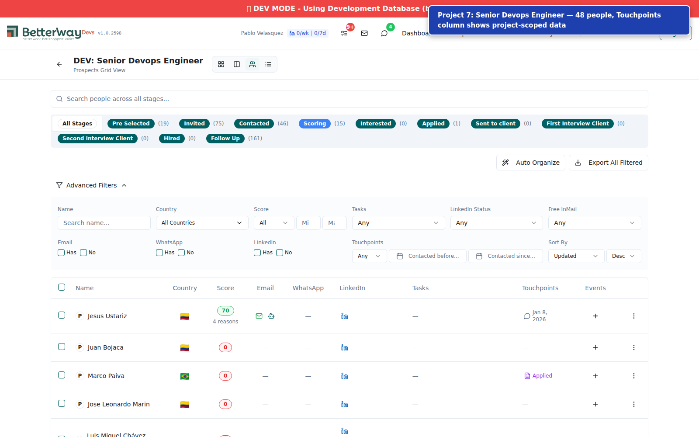
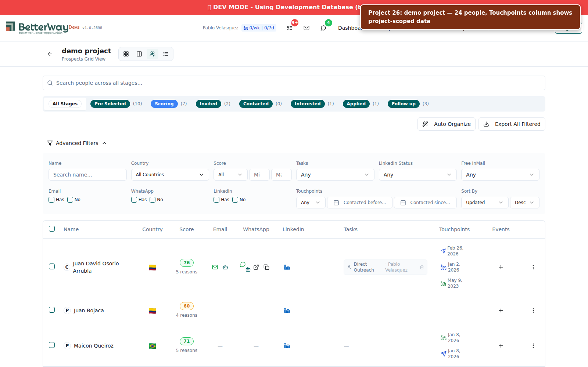
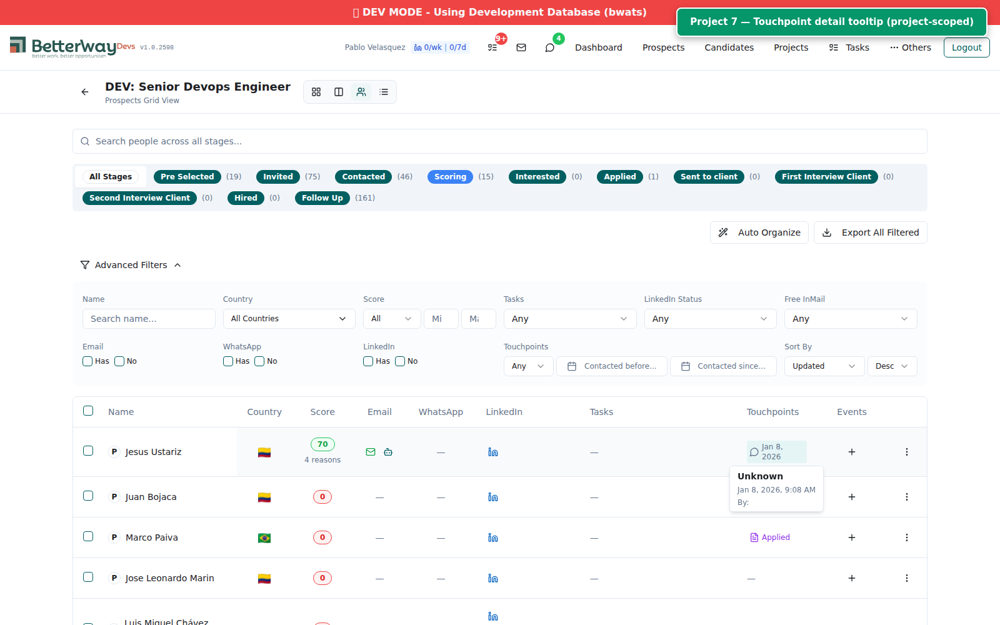
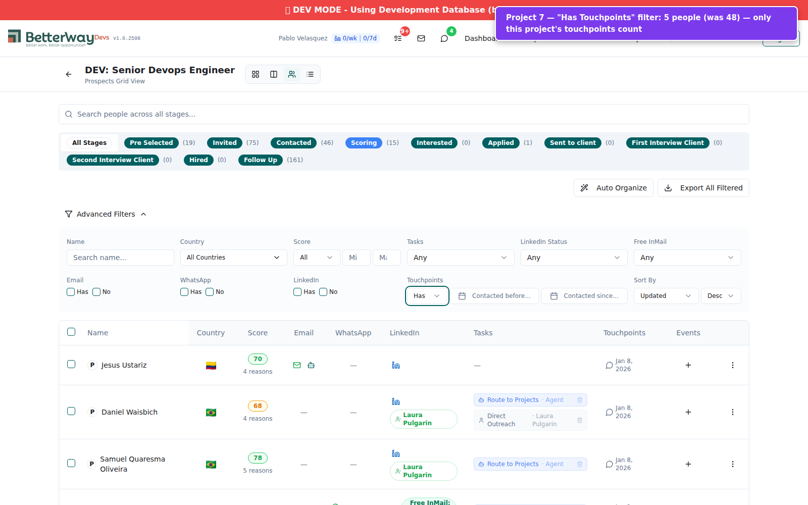

Fix auto_organize Stage Moves Leaking Across Projects
| AC | Description | Result |
|---|---|---|
| AC1 | All auto_organize stage movement logic is project-scoped | PASS |
| AC2 | Only PROJECT-scoped evidence drives stage movement | PASS |
| AC3 | Unscoped/global touchpoints visible in UI but don't trigger stage moves | PASS |
| AC4 | Badges computed per project | PASS (code review) |
| AC5 | No silent failures -- errors logged with person ID and reason | PASS |
| AC6 | Verified on both dev and v1 | PARTIAL (dev only) |
OVERALL: PASS (dev environment)
HTTP Status: 200
{
"audit_task_id": 1660,
"project_id": 12,
"project_name": "DEV: ZZ TEST PROJECT",
"people_evaluated": 1,
"people_skipped": 2,
"moves_made": 0,
"connected_count": 0,
"active_tasks_count": 2,
"move_details": [],
"error_details": []
}
connected_count: 0, no cross-project leaking, no errors.HTTP Status: 200
{
"audit_task_id": 1661,
"project_id": 7,
"project_name": "DEV: Senior Devops Engineer",
"people_evaluated": 284,
"people_skipped": 34,
"moves_made": 1,
"connected_count": 0,
"active_tasks_count": 19,
"move_details": [
{
"person_id": 5371,
"person_type": "prospect",
"from_stage": "Pre Selected",
"to_stage": "Scoring",
"reason": "no_tasks"
}
],
"error_details": [
{
"person_id": 5398,
"person_type": "prospect",
"error": "Unknown error"
}
]
}
connected_count: 0. Person 5371 moved to "Scoring" with reason no_tasks, NOT to "Connected" -- key cross-project isolation proof (see Test 5). Error for person 5398 properly logged with person_id and reason (AC5).HTTP Status: 200
{
"audit_task_id": 1662,
"project_id": 5,
"project_name": "DEV: Senior Full-Stack Java and React Developer",
"people_evaluated": 389,
"people_skipped": 63,
"moves_made": 2,
"connected_count": 0,
"active_tasks_count": 51,
"move_details": [
{
"person_id": 34324,
"from_stage": "Pre Selected",
"to_stage": "Scoring",
"reason": "no_tasks"
},
{
"person_id": 5371,
"from_stage": "Pre Selected",
"to_stage": "Scoring",
"reason": "no_tasks"
}
],
"error_details": []
}
connected_count: 0. Person 5371 also exists in this project, moved to "Scoring" (not "Connected"), confirming LinkedIn connection evidence from project 26 does not leak here.HTTP Status: 200
{
"audit_task_id": 1663,
"project_id": 13,
"project_name": "DEV: Staff Engineer - C# .NET",
"people_evaluated": 21,
"people_skipped": 25,
"moves_made": 0,
"connected_count": 0,
"active_tasks_count": 4,
"move_details": [],
"error_details": []
}
connected_count: 0, clean run.Person 5371 has 5 touchpoints, all scoped to project_id: 26:
linkedin_connection (x2)linkedin_invite (x3)With project_id=26 (matching): Returns 5 items (all touchpoints).
With project_id=7 (non-matching): Returns 0 items.
With project_id=5 (non-matching): Returns 0 items.
Without project_id: Returns all 5 items (backward compatible).
connected_count stays at 0 across all tested projects. Before the fix, these global LinkedIn connections would have triggered stage moves in unrelated projects.HTTP Status: 404
{
"code": "ERROR_CODE_NOT_FOUND",
"message": "Project not found",
"payload": ""
}
npm run build
v1.0.2598 (0cc60cb), all 4982 modules transformed.projectId parameter added as optional (projectId?: number)...(projectId && { project_id: projectId })projectId parameter added to useTouchpoints(people, projectId?)projectId: ['touchpoints', projectId, ...]getTouchpointsByUsers(users, token, projectId)const { getTouchpointsForPerson } = useTouchpoints(peopleForTouchpoints, projectId);projectId is a prop of the component (line 135, 228)projectId flows correctly through the full chainprojectId. Badges like "Contacted", "Follow-up needed" that are computed from touchpoints will only reflect project-scoped activity.| Screenshot | Description |
|---|---|
p2-project-grid-touchpoints.png |
Project 7 grid: 48 people, Touchpoints column shows project-scoped data. Jesus Ustariz has 1 touchpoint (Jan 8, 2026). |
p2-project-grid-touchpoints-2.png |
Project 26 grid: 24 people. Juan David Osorio Arrubla shows 3 touchpoints (Feb 26, Jan 2, May 9). Maicon Queiroz shows 2. Different data from same people in Project 7. |
p2-touchpoint-detail-hover.png |
Tooltip on Jesus Ustariz's touchpoint in Project 7: "Unknown - Jan 8, 2026, 9:08 AM". |
p2-has-touchpoints-filter.png |
Project 7 with "Has Touchpoints" filter: reduces from 48 to 5 people. Filter only counts this project's touchpoints. |
Cross-project proof (6 people appearing in both projects):




v1 deployment and verification is a separate step (D1). This test report covers dev environment only. v1 testing should be performed after deployment.
NOT TESTED (out of scope for this QA round)
x-data-source=development as a query parameter when calling the dev branch login endpoint.Authorization: Bearer {token} header (not X-Xano-Authorization).reason: "no_tasks" (people without active tasks being moved back to Scoring). No reason: "connected" moves were observed, confirming the project-scoping gate is working.